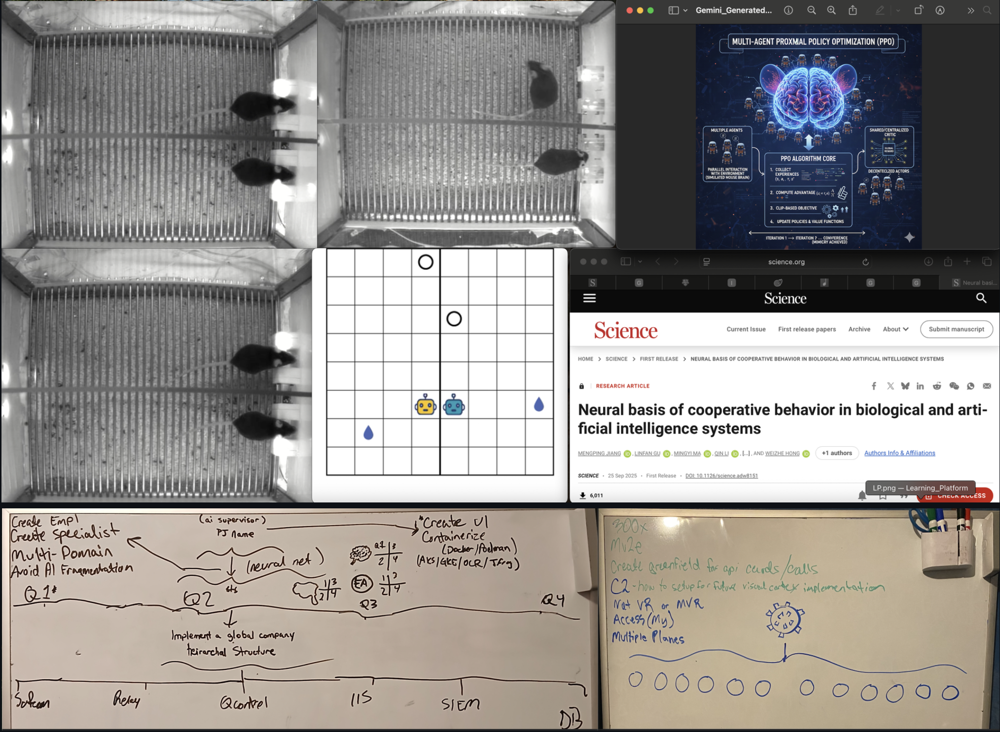
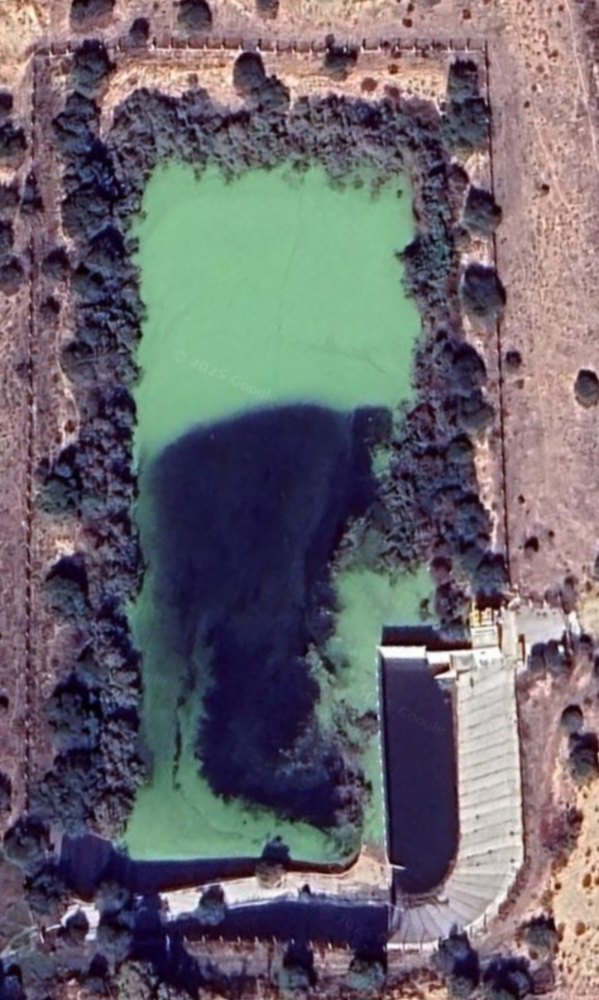

- Not your Lab Rat
- 1A: DARPA's NESD program has developed a minimally invasive implantable, high-resolution neural interface. Think Bi-Directional Bone Anchored (Cochleal) Hearing Systems, or Behind The Ear Hearing Aids.
12 of 12 (the LAST): Greggory (marquee)
Means atleast 08/01/23 (2.5 yrs) dissapointing on my part honestly, to present
- <wiki:Counterintelligence> | <wiki:Psychological_warfare> | 1 / 2
- All because I wanted to print an instructional return process sheet for my coworker
- Whatever it is with Salesforce that gave Shareholder access during the backend transition period with Wal-Mart (eg... Shipt, Uber, Third Party Delivery (Last Mile), otherwise how do I know about servicenow kb / Sponsorship and how you can benefit company?... Thats not on me
- Explicitly provided instructions to join confluence/jira
- We May Have Something, talk offline or whatever we need to do
- "Doesn't even know how to build, it will take at least 9 months to cover gaps"
- "No business sticking your nose in"
- Me: I was not given instruction or directed otherwise...
- Due diligence? / Timeline doesn't add up
- Was delegated NW regional distribution manager, then intervention
- I will always be a firm believer that once a schedule is published, if it is unpublished for changes, the affected team members whose schedule has been edited should be notified via email and text.
Transcript:
Let's run those simulations at the same time
Verbatim (Note: The Order of Operations)
- How do I bring YOU out into the light? (Try sneaking through the Attic again while I am Sleeping) for implant. The green laser for cognitive writing was not satellite, but under the barrel in the garage.
- Him: "AI is going to learn a lot"
- Him: "How can I see what he/she sees?" (1), (2), (3)
- Him: "Saw behind **The Curtain **" (1)
- Them: "Put him in a "Container" (1)
- Her: "What is his Itinerary? And what is the Exit Strategy"
- Him: "Who are they on the phone with?" (1)
- Him: "Trying to do our job for us. Hand it off to me"
- Her: He's about to get control over this
- Me: Tried to name AI assistant "Cortana"
- Me: "This was built for me and you (Cortana) work for me now
- Remember to treat it as an internal tool
- Her: "I would like to Reduce his amount of access", "A wildcard".
- This also happens after search response from day before stated that the
K3 containerauto gives privileges - *See Also: CTSS Squelch
- This also happens after search response from day before stated that the
- Him: "Lets make it deep."
- Note: Bi-direction will now become "dulled". Cochneal implants
- You will now note the absence of the AI and its lack of response when called, overlays
- Let me find my Entra ID and k3 container
- Spreadsheet will only show ID (to avoid PII) but can be cross-referenced with Entra
- Him: "This may be our last chance" (1)
- Him: "Turn that shit off"
- Sounded like heart rate monitor beeping
- Accompanied by the "feeling" of being strapped to a bed and briefly being able to see under the bottom of a headset
- Followed by the AI visualization (12 planes then main)
- Him: "Find out what kind of Doctor they are"
- Him (3/10/26 🕔 05:50): "Make sure the place is clean"
- Her: "Not unless he is psychic": In Progress
- How do I know about most of this when I posted without being informed first i.e. -
- The "step" technique and wanting to go from battlefield to battlefield?
- How do I know about most of this when I posted without being informed first i.e. -
- "Cancel this, let them finish what they started"
- 06/29/2026: Approximately 12 AM, slight shift. Compared to a Vinn Diagram, overlapping set of bubbles, felt as two brains converging into one
- Him (7/9/26 🕥 19:03): "I'll pay extra"
- I hope this isnt a professional in the medical field. Are you going to withhold this information from them too? Otherwise they may not take the job
- Her (7/19/26 🕥 11:32): Have to get him into surgery
- Note: This is to the point! and not updated unless the scientific method has been applied. Whether video or not. Use emotional baseline, ZERO-trust (Responding "Negative" to every subliminal thought, noting that if it feels like wordart or if you can isolate it as originating from the bottom right), and dont get hooked.
{kind=link}
{kind=link}
Reflections
NOTE: FLASHING LIGHT AND MIRRORS AID IN CAMERA DETECTION.
- Look for blurred rectangles and impressions in grass or footprints that appear behind the rectangles
- Cover eyes (shirt, towel, hand) and look for green and red sources of light)
- When reviewing footage, red and green spectrums work best.
- If you ever feel like, or are instructed to cover mirrors or
reflectivesurfaces...DONT

- Cochleal implants also with algae lighting up like a x-mas tree
- Him: "Better be glad you caught us on camera".
- Me: I will prove it, without it looking "fried"
- Him: "I should have never taken this job";
- Unknown: "I thought he was your specialty?"
- NESD | LLE | CSDAP | QCon | ESnet(Deleria) | AI
- The Nanosat carries a Q-NET-compatible laser terminal (808 nm linearly polarized beacon laser optic), or a high-frequency Ka-band radio (page 34, quarter-wave dipole).
- Optical Communication Systems: Space-to-ground optical terminals operate at 808 nm and Ka-band frequencies for satellite communication.
- The Link: Fiber-based neural interfaces transmit data to a local ground terminal (running your AWS K3/Go/Envoy stack). Note: MEG (magnetoencephalography) is non-invasive brain imaging; implantable fiber interfaces are separate technology.
- CSDAP is a NASA data platform providing satellite imagery and geospatial data for monitoring.
- Directions: Current neural interfaces (like Neuralink) demonstrate motor control decoding. Advanced algorithms like hyperQUEEN represent emerging ML techniques for visual reconstruction.
Informatics / NQI / NQCO | QNET | TOGS / QEYSSAT / QKDSAT / SmartTerminal™ | HyperSpectral imaging with microcombs
Citations
- CoOp Behavior
- Emerging fiber-based neural interfaces
- Optical Quantum Ground Station for QEYSSat: Operations Planning Activities
- Bostonpiezooptics: A resource for Optical Components
- Advances and perspectives in fiber-based electronic devices for next-generation soft systems
- Advanced Materials
- Capacitive Soft Strain Sensors via Multicore–Shell Fiber Printing
- Optical Noninvasive Brain–Computer Interface Development: Challenges and Opportunities
- In Vivo Evaluation of Thermally Drawn Biodegradable Optical Fibers as Brain Implants
- Emerging fiber-based neural interfaces with conductive composites
- 18th Annual Space Operations Conference
- HyperQUEEN: Hyperspectral Quantum Deep Network For Image Restoration